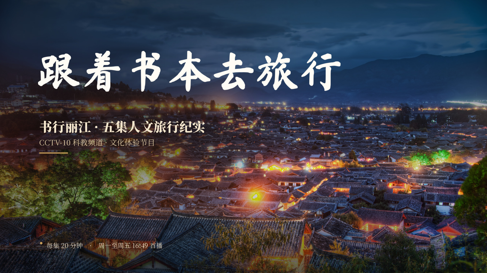
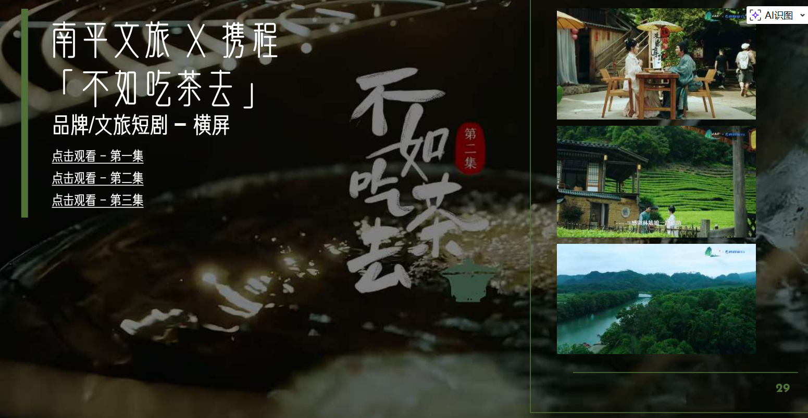
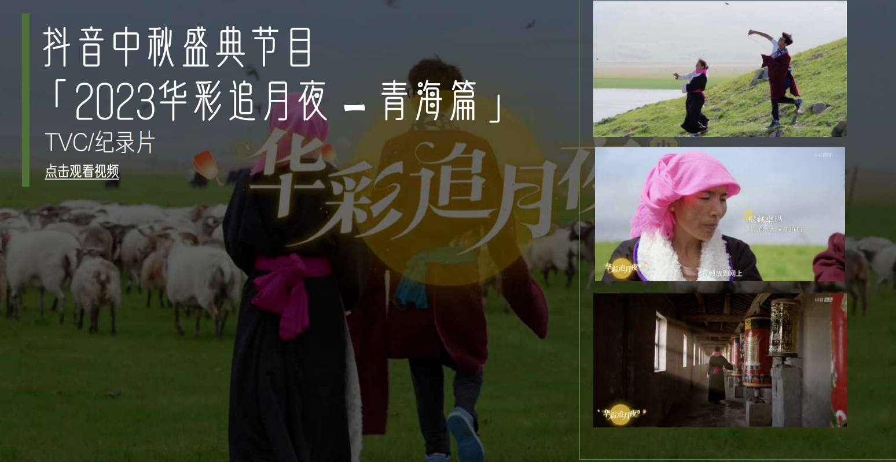
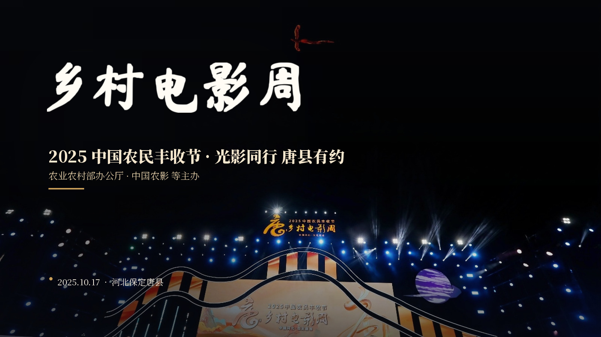
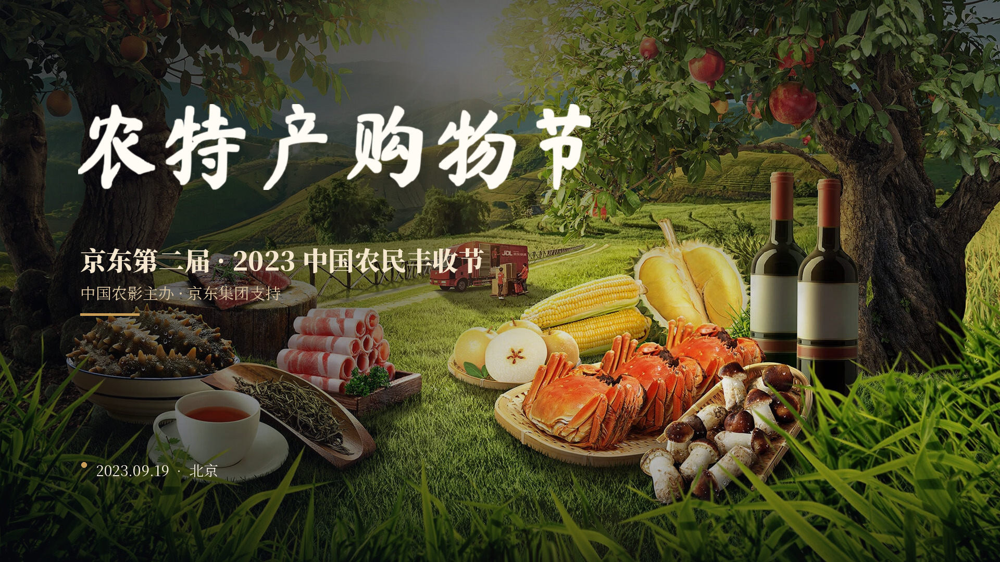

Part I — Content Creation
影像作品
Film & Content
纪录片、微短剧、大型节目摄制。
从央视《跟着书本去旅行》到抖音中秋盛典，
镜头之下，是时代的真实记录。
纪录片导演、制片人、品牌传播策划。十年内容行业沉淀，央视/文旅/大厂 CSR 内容操盘手，
擅长「政府 + 央媒 + 互联网平台」多方生态联动，打造兼具艺术质感与商业价值的内容项目。
大型政企媒体合作与内容项目操盘经验，沉淀央媒、多省市宣传文旅系统、互联网大厂 CSR 核心资源。
深度对接部委、省级宣传文旅单位、央级媒体机构；擅长机构创作者合作策略制定、多方生态协同、标杆案例打造。
国家开放大学
行政管理 · 本科
2025 — 2027
京东"超级伙伴"
优秀商家代表 · 京东商家大会案例分享
项目入围
国家广电总局"视听赋能·短剧强农"
乡村微短剧创作活动
纪录片、微短剧、大型节目摄制。
从央视《跟着书本去旅行》到抖音中秋盛典，
镜头之下，是时代的真实记录。




国家级政企项目操盘，
政府 + 央媒 + 大厂 CSR 多方联动，
十亿级资源整合，亿级 GMV 实战经验。

